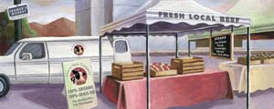

KERI ROSEBRAUGH
Finding alternatives to the beef in your supermarket can take a little extra work, but you’ll be rewarded with healthy, flavorful beef free of added hormones, antibiotics and other unwanted nasties.